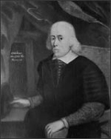

William Harvey
1578–1657
Born in England in the middle of the sixteenth century, William Harvey was the oldest of seven sons. He was an excellent student who received a bachelor's degree at Cambridge University in 1597 and then went on to study medicine at the University of Padua in Italy, the most prestigious medical school of the time. In 1602 he returned to England and went into practice. He married the daughter of the court physician, and eventually became physician to both King James I and King Charles I.
In 1615 Harvey began to study the way blood circulates through the body by experimenting on animals and dissecting the bodies of executed criminals. He found that the valves in the heart and veins allow blood to flow in only one direction. He also used mathematical data to prove that blood was not being absorbed by organs or transformed into skin, as physicians had thought since the time of Galen. He realized that blood had to be flowing through a "closed circuit" instead. He determined that the heart acts as a pump, forcing blood through arteries to different parts of the body. The veins return the blood to the heart, where it is recycled through the lungs.
Harvey's theories were correct, but they were so radical for his time that he waited 13 years before publishing them. In 1628 he released a book, On the Movement of the Heart and Blood. At first, most physicians and scientists rejected Harvey's findings, and he lost many of his patients. It wasn't until years later that scientists began to accept his ideas. Today, Harvey's work is considered the foundation of all modern research on the heart and blood.
After the publication of his book, Harvey began to study the mechanisms of reproduction. He was the first to propose that the embryos of humans and other mammals are formed when a sperm and egg fuse. He continued to teach until his death in 1657.